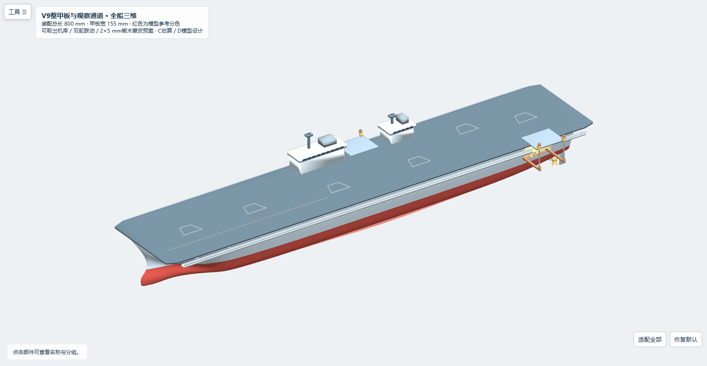
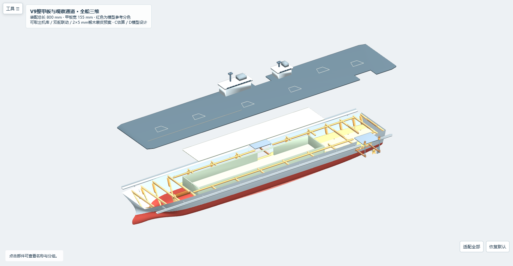
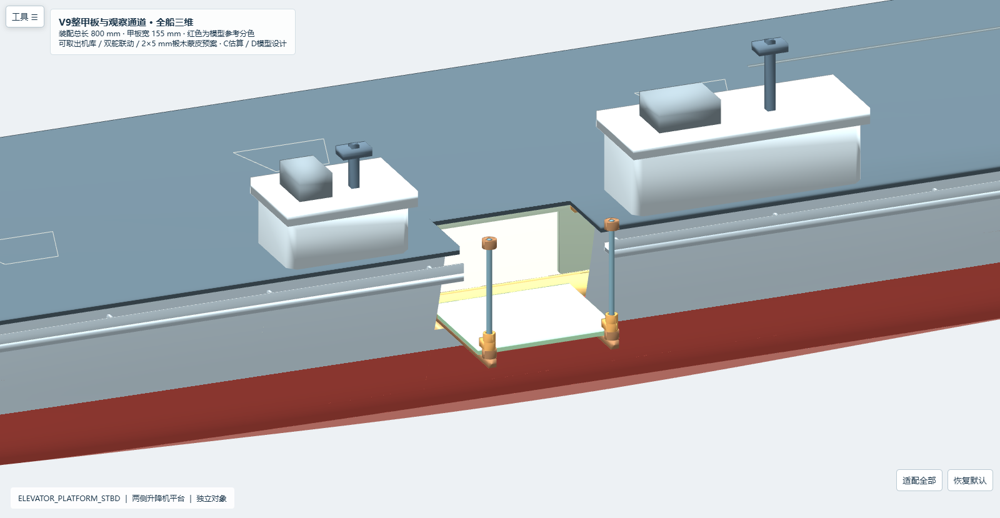
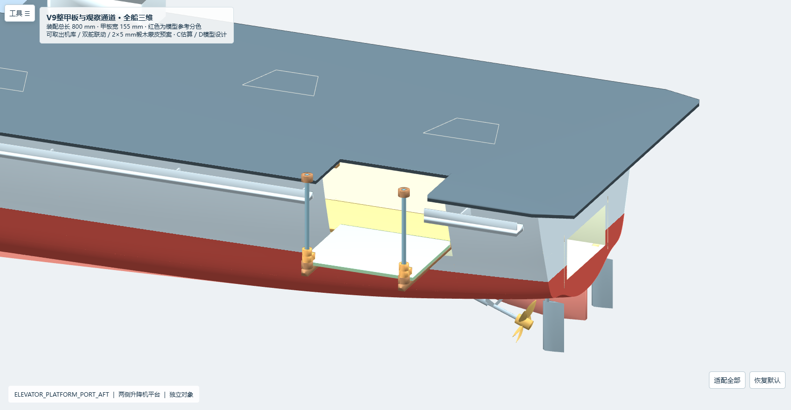
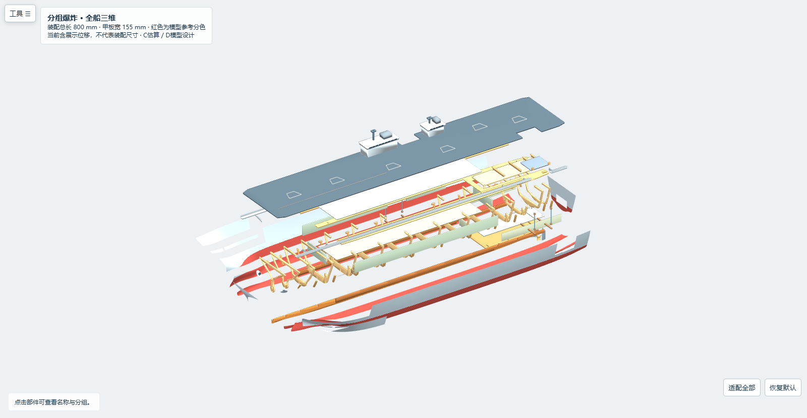
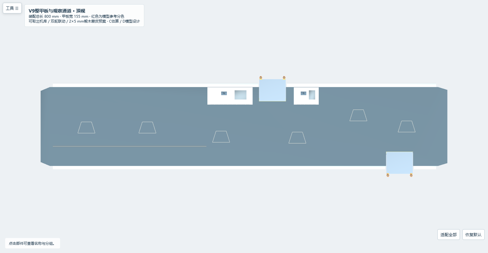
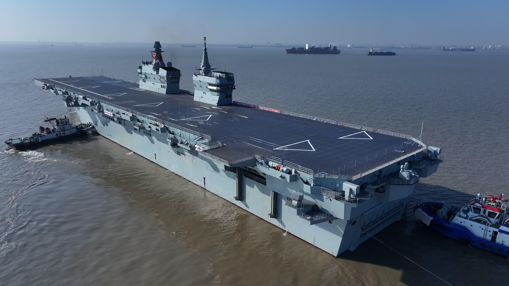

用户图6/7为同一照片；只计一次。可见左舷靠艉的平台及竖向导向构件。右舷两岛之间由公开专业报道支持。当前精确坐标、52×43mm和32mm行程均为D模型设计。

逐项证据/来源与冲突 · 运动参数 · 几何检查 · 独立审查
拿取方式：先解除尚未选型的固定件，双手托住甲板两端并沿+Z上提，不用舰岛作把手；顶板、线束、机库按页面步骤操作。800mm整板的翘曲与拿取稳定性仍需实物验证。
公开方位依据：Naval News，2024-12-27；CSIS原始卫星影像分析。这些资料不证明当前毫米坐标或模型轨道机构。
# 076 V9 整块飞行甲板、侧舷开口与导向升降机 已完成可编辑原生几何和离线数值复核；结果为几何评审通过。Rhino 桌面、实物强度与执行器仍未验证，不能作为切割或制造放行。 ## 几何与来源 mm；X0 艏、X800 艉、+Y 右舷、+Z 向上。800mm 是既定项目约束；原 V8 外形仍为模型估计。右舷两舰岛之间、左舷后部的粗略布置为 C 照片/分析推断；精确坐标、52×43mm 平台足迹、开口、导轨、滑套、限位与支撑均为 D 模型假设，不是实船量测。冻结输入与哈希在 inputs/v8 和 input_manifest.json；上游 V8 文件未改。 FLIGHT_DECK_WHOLE 为单个连通 3mm 原生挤出实体，X0～800、Z76～79，无内孔、无碎片舱盖。右舷边缘缺口 X429.5～482.5、Y49.5 向外；左舷后部缺口 X679.5～732.5、Y−49.5 向外，平台侧边名义间隙 0.5mm。舰岛和全部标线属于 SERVICE_HATCH，与整块甲板同移；机库顶板属于独立 HANGAR_ROOF。 ## 实际开口和原结构切改 右舷开口位于两舰岛之间，对应 X430～482 升降机；左舷后开口对应 X680～732。3 个原始蒙皮面被实际替换为 7 个精确 NURBS 子面：右舷 X428～484，左舷 X678～734。开口上沿 Z76；下沿为原母面的等参数线，真实高度如下，不把它描述为水平线。未切区域没有重新拟合，逐点来源残差见证据 JSON。 | 原面 | 开口 X mm | 实际下边 Z mm | |---|---:|---:| | SKIN_AFT_2_3_STBD | 428～484 | 40.676207～40.750000 | | SKIN_AFT_3_3_PORT | 678～700 | 40.267113～40.750000 | | SKIN_AFT_4_3_PORT | 700～734 | 39.556902～40.750000 | 开口下沿较平台底部低，为导轨下支撑留出空间。FRAME_08_X460 的右舷上部、FRAME_12_X710 的左舷上部、两侧局部 DECK_LEDGE、X710 左舷贴板与旧支座已实际去除或切改，X710 可取梁左端缩短至 Y−25.5，原上横板的两个局部槽补齐为转移地板；机库右舷墙口放宽到 X429.5～482.5、Z47～70.5。 保留 800mm 外包长度及原 V8 艉部设计。X750/X772 肋骨、WELL_PORT_WALL、WELL_STBD_WALL、WELL_FORWARD_WALL、两段 WELL_INNER_FLOOR 的原生几何编码逐一相同。坞舱开区间 X610～776、Y−22～22、Z25～44 无实体侵入；侧壁与底板没有为侧口切穿。 ## 平台、导轨和限位 | 项目 | 右舷 | 左舷后部 | |---|---|---| | 平台足迹 | X430～482、Y50～93 | X680～732、Y−93～−50 | | 轨心 XY | (433,96)、(479,96) | (683,−96)、(729,−96) | | 竖向导轨 | Z44～88，半径 1mm | 同左 | | 滑套孔 | 半径 1.25mm，名义径向间隙 0.25mm | 同左 | | 上位平台 | 底 Z76／顶 Z79 | 同左 | | 下位平台 | 底 Z44／顶 Z47 | 同左 | | 导向行程 | 32mm，轴向 (0,0,1) | 同左 | | 下限位／上限位 | Z44～47／Z85～88 | 同左 | | 运动接口 | ELEVATOR_STBD | ELEVATOR_PORT | 每根导轨下方为 3mm 支撑梁，Z41～44，连接至原上横板底面；滑套在平台外缘之外，以伸臂接到平台上表面。平台、伸臂、滑套随各自组件同移；固定导轨和限位不跟随。下位滑套底面接触下限位顶面 Z47，上位滑套顶面接触上限位底面 Z85。承载能力、材料等级、公差链、摩擦与执行器尚未选型或实测；名义几何间隙不能替代机械可靠性证明。 8 个限位环的原生圆孔半径改为 1.0mm，与导轨半径 1.0mm 形成名义贴合、径向间隙 0；孔和杆均为原生精确圆，不以多边形内孔穿入圆杆。上下限位环均按 D 模型假设粘接或夹紧固定在杆上，实际粘接/夹紧件和承载 NOT_VERIFIED。每环名义杆面接触面积约 18.85mm²；4 个下限位底面另外与支撑顶面 Z44 接触，接触面积逐项记录在 observation_validation.json。 右舷净通道 X430～482、Y38～93、Z47～70 直达机库右舷墙口；左舷后净通道 X680～732、Y−93～−25.5、Z47～70 通到坞舱上方的内部观察区，不穿过下方封闭坞舱。整块甲板拆除后可以从顶部观察，两侧未蒙皮口可侧向观察和检修。 ## 实际保存文件检查 | 原生文件 | 对象数 | 原生 Mesh | 命名视图 | |---|---:|---:|---:| | 076_assembled_v9.3dm | 314 | 0 | 5 | | 076_skeleton_v9.3dm | 125 | 0 | 5 | | 076_exploded_v9.3dm | 314 | 0 | 5 | | 076_planking_jig_v9.3dm | 128 | 0 | 5 | 装配文件 SHA-256：`91ccbbf2ed096be40bcf0853755e0bc534109f5659251c5d861b18e2a53b6616`。 - 四文件实际保存并由 rhino3dm.File3dm.Read 回读；全部几何有效，单位为 mm。273 个 V8 对象原生几何编码未变。 - 109 个板件/滑套挤出的内外轮廓和两端面，与 panel_details 的坐标最大误差 1.14e-13mm；7 个保留蒙皮子面对来源母面最大采样偏差 5.69e-13mm，面法向继承原面。 - 197 个实体包围盒候选对，非装饰实体正体积碰撞 0；另列出 16 个继承的舰岛窗/雷达装饰接合。 - 两个平台和随动滑套的完整连续 32mm 扫掠无正体积障碍；整块甲板与舰岛向上 190mm 连续扫掠通过。 - 先取下整块甲板，再抬机库顶板 80mm，独立连续扫掠通过；没有把隔着甲板强行提顶板记为通过。 - 两个净通道实体棱柱均无固定件侵入；保存原生蒙皮 102541 点检查无侧口阻挡。开放曲面不作为封闭实体做布尔，曲面证据限于精确子域和采样，完整模型强度/水密没有由此得到证明。 ## 接口与重建 场景顶层沿用 parameters/groups/parts/previous_parts/rotors/steering/routes。每个 parts 记录含 name、group、vertices、faces、offset、color、assembly 等字段。SERVICE_HATCH 在 V9 兼容命名中代表整块飞行甲板，并非旧内部舱盖；ELEVATOR_PORT 指 PORT_AFT 平台。上位为原始坐标，下降量范围 [−32,0]mm；运动只能沿给定导轨 Z 轴。完整行程、轨心、间隙、先后条件见 motion_metadata.json。 python source/build_observation.py → python source/verify_observation.py → python source/write_observation_report.py。依赖版本在 requirements-validated.txt，通用依赖名在 requirements.txt。重建只读冻结输入并覆盖本 V9 包的生成文件；不会改 V8 或网页。 ## 尚未完成的验证 Rhino 桌面实际开启与交互为 NOT_CHECKED；木板/导轨支撑强度、压载/下水、胶接和密封、执行器选型、实物公差与动作是 NOT_VERIFIED。两个侧面开口属于明确的未蒙皮设计，不宣称船体水密。不把本包作为制造放行。